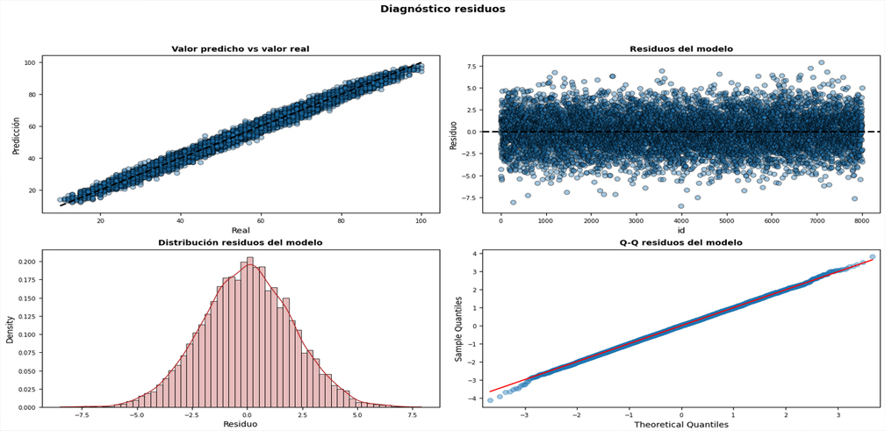
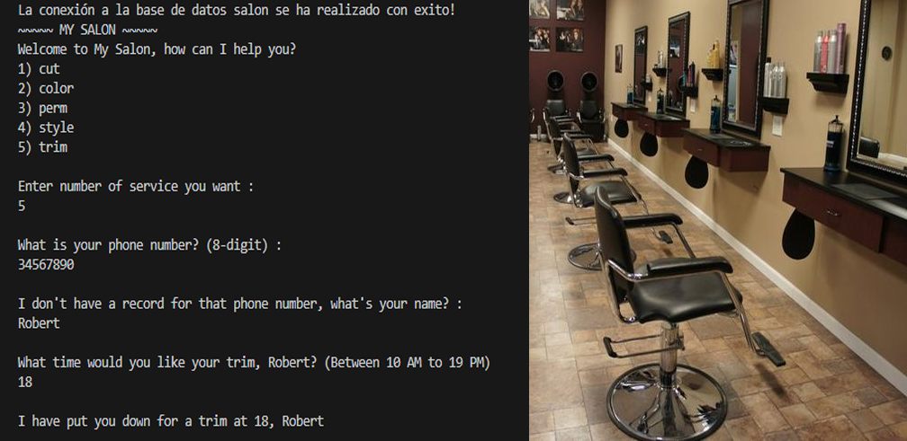
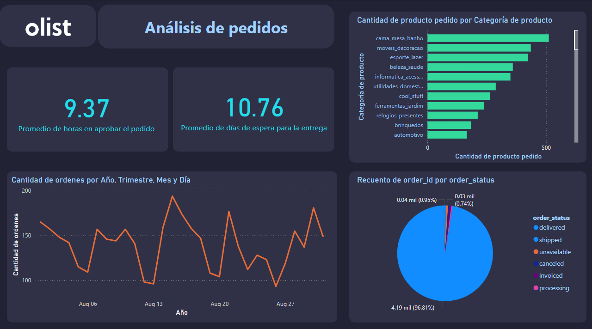
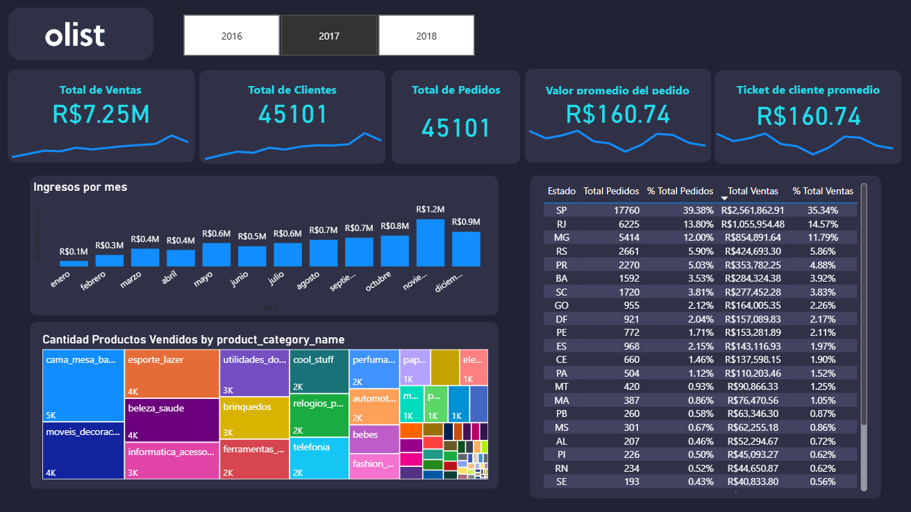
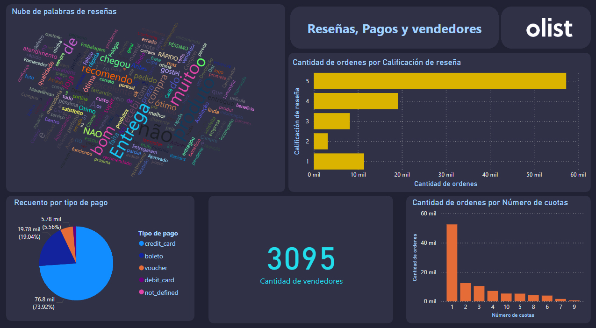

En este proyecto se aborda la generación de un modelo de regresión lineal múltiple en Python de un set
datos de desempeño de estudiantes extraidos de Kaggle, se abarcan temas como la estimación de los parámetros del modelo con sus respectivas pruebas de hipótesis,
la exploración de posibles correlaciones entre variables predictoras, análisis del comportamiendo de los errores y sus respectivas pruebas de validación.

En este proyecto en el archivo "salon.py", se desarrolla una base de datos para una peluquería ficticia utilizando Python y PostgreSQL a través de la biblioteca psycopg2.
Se crean tablas para clientes, servicios y citas, cada una con sus respectivas claves primarias y foráneas. Posteriormente
en el archivo "reservar_hora.py", se elabora un script de consola que simula el registro de una cita,
considerando tanto el caso en que los datos del cliente no están previamente registrados, como el caso en que sí lo están.

Dashboard en PowerBi
En este proyecto, se desarrolla un dashboard en PowerBI utilizando un conjunto de datos públicos
sobre pedidos, realizados en la tienda de comercio electrónico Olist, Posee información de aproximadamente 100.000 pedidos desde 2016 a 2018, hechos principalmente
en Brasil ; Fuente de los datos : Kaggle


